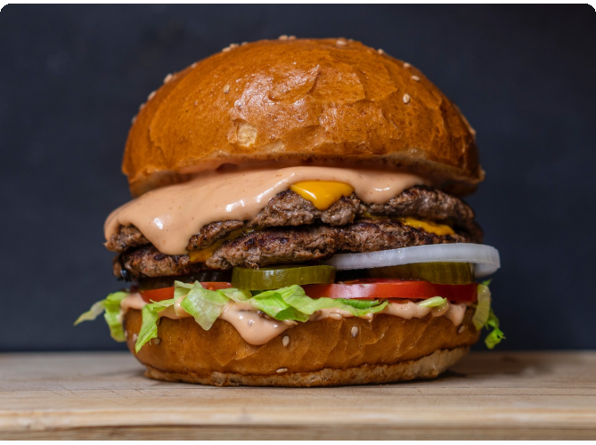

Hamburguesa "La Chilena"
Pan dorado en mantequilla, 3 carnes de 100g, queso cheddar, lechuga, tomate, cebolla pepinillo y salsa "Bien merequeten".
Las mejores recetas para que puedas disfrutar
Pan dorado en mantequilla, 3 carnes de 100g, queso cheddar, lechuga, tomate, cebolla pepinillo y salsa "Bien merequeten".

Daniel Vásquez conocido como "Chef Danny" es un talentoso cocinero chileno que ha destacado por su enfoque innovador en la cocina de autor y su pasión por rescatar ingredientes típicos chilenos.